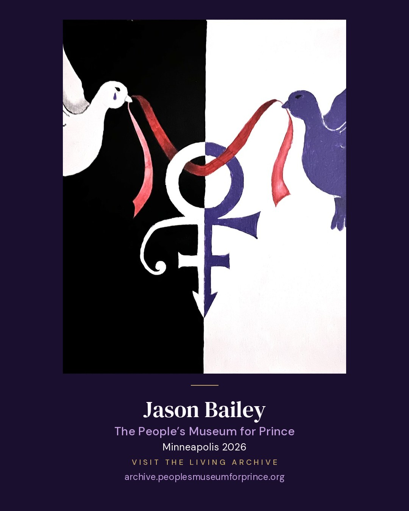

Jason Bailey
Minneapolis, MN

Words you’re welcome to use or change
I’m one of 75 people in The People’s Museum for Prince, a museum of art and stories from people whose lives Prince Rogers Nelson touched. We were in Minneapolis in June 2026, and now the museum is open online. Here’s my page 💜 https://archive.peoplesmuseumforprince.org/participants/jason-bailey.html?ref=shared @peoplesmuseumforprince